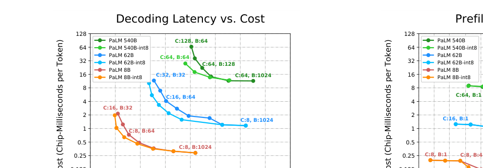
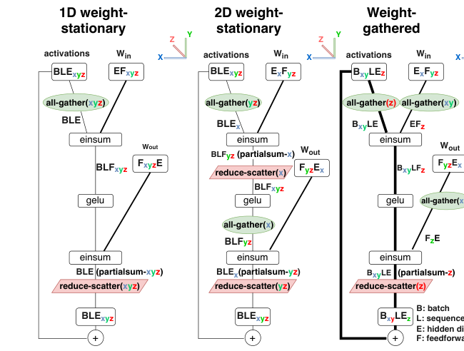
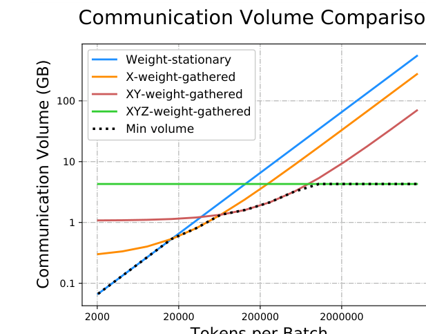
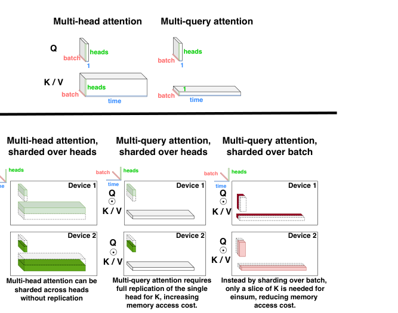
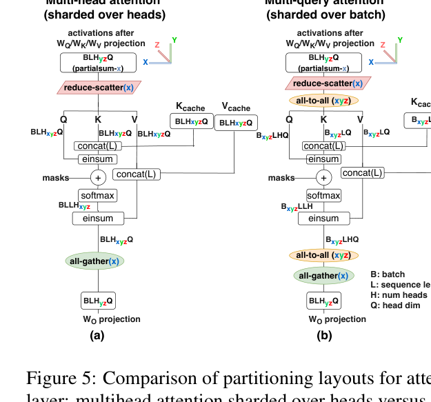
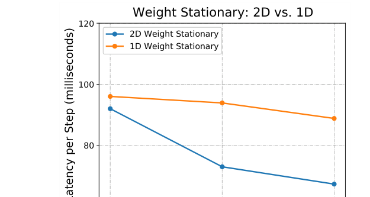
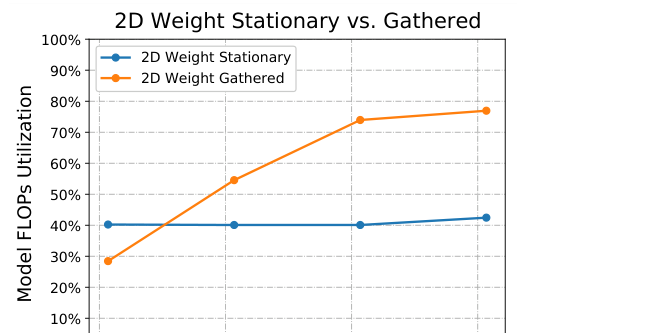
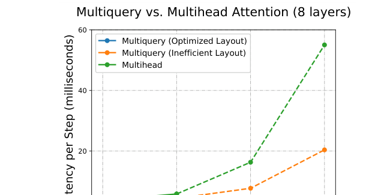
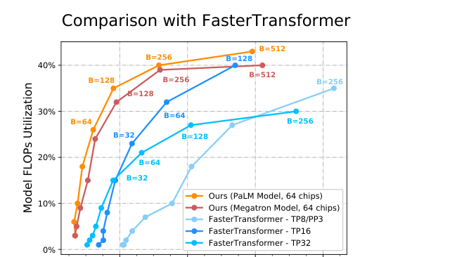

把540B参数的模型跑起来做推理，难的不是算力，是访存和通信：每个token都要把全部参数从HBM搬一遍，KV缓存随batch和上下文膨胀，芯片一多通信就封顶。Google这篇论文把PaLM推理的每一笔账都算清楚了。
核心方法是先建模再选型：解析地算出每种切分策略的通信量，按应用场景选1D、2D还是权重聚集；再用多查询注意力瘦身KV缓存、并行块砍通信。下面逐节拆开。
推理成本记三笔账：延迟、吞吐、模型FLOPS利用率。延迟拆成prefill和decode：输入token在prefill一次性并行处理，输出token在decode逐个自回归生成；decode延迟也可按步计量。MFU是实测吞吐除以硬件峰值FLOPS下的理论最大吞吐。
访存账：权重和KV缓存存在HBM里，每次前向都要搬进计算核心一次，小batch时搬权重主导，大batch加长序列时搬KV缓存主导。计算账：N参数解码器模型每token要2N次matmul FLOP。通信账：模型切到多芯片上就有芯片间通信，芯片越多通信占比越大。
三个典型场景：要最低延迟就堆芯片、多维切分，小batch延迟低但MFU差、单token成本高；要长上下文，500B+模型多头注意力的KV缓存在batch 512、上下文2048时达3TB，是参数量的3倍，每个生成步都要搬一遍，计算核心基本空转；要离线高吞吐就拉大batch，MFU好看，单token成本低。
64块TPU v4上，PaLM 540B用int8权重做到生成29ms/token，大batch处理输入token时MFU达76%，上下文2048。图1是8B、62B、540B三个模型在bf16和int8下的成本-延迟帕累托前沿：左图生成64个token的每token延迟，右图处理2048个输入token的时间，C是芯片数，B是batch大小。

论文基于TPU v4的3D torus拓扑X×Y×Z描述切分。记号BLExyz表示逻辑形状BLE的张量按最后一维E切成X×Y×Z份，每芯片分到[B, L, E/(X×Y×Z)]；某轴上复制则省略该轴。后缀partialsum-x表示已在芯片本地求和、还需沿x轴跨芯片求和。
通信原语来自MPI：all-reduce(x)把partialsum张量沿x轴求和再广播；拆成两步就是reduce-scatter(x)和all-gather(x)：前者求和但结果按轴分片，后者广播拼接后输出变大X倍；all-to-all把分片从一个张量维度搬到另一个，比如BLHxQ变为BxLHQ。
最简单的1D权重静止：E×F权重矩阵沿E或F轴切到nchips块，每块权重固定在芯片上，激活在芯片间搬运。算连续两个matmul时有个经典技巧：第一个按输出轴切，第二个按输入轴切，中间不需要通信。但通信量恒定不随芯片数下降，芯片一多就封顶。
2D权重静止把E×F矩阵沿E和F双轴切，每块近似正方形。E=1024、F=4096、64芯片时，E切4份、F切16份，每芯片存256×256。交替在两个轴上做激活聚合，每芯片永远有算自己权重块所需的激活分片，不再需要完整复制激活。通信量按O(1/√nchips)下降，加芯片就能继续降延迟。dff=4dmodel时，nchips>16后2D比1D省通信。

细节上，2D布局权重为ExFyz，dmodel切X份、dff切Y×Z份。最优取X=0.5×√nchips、YZ=2×√nchips，总通信时间Tcomm=8BLE/(√nchips×带宽)，而1D是Tcomm=2BLE/带宽。
batch再放大，输出激活可能比权重还大，这时反过来更划算：激活静止在芯片上，权重在芯片间搬运，这就是权重聚集。batch中等用X或XY聚集，大batch用XYZ全聚集，prefill和decode可以混用不同布局。最优聚集轴数N=√(BL·nchips/F)，总通信时间Tcomm=4E√(BLF)/(√nchips×带宽)，正比于√BL而非BL。图3显示batch以token计越大，最优布局越往权重聚集滑。

多头注意力可以照前馈层的方式切，把nheads当dff。但KV缓存的访存开销在大batch、长上下文下会压过一切。多查询注意力只给K、V留一个头，nheads个查询头共享，KV缓存直接小nheads倍，代价是少了一个可并行的轴。

直接照搬多头那种按头切分，会把唯一的K、V头复制到每块芯片，省内存的效果全丢。论文的切法是按batch维B切Q、K、V：每芯片只加载1/nchips的KV缓存，访存时间同比例下降。代价是输入激活要用all-to-all重分片，但decode时Q、K、V每样本只有一个token，KV缓存却有2048个token，花小通信省大访存非常划算。prefill时Q有2048个token，K、V访存被摊薄，就不按batch切，仍用按头切。
效果上，64芯片、batch 128时优化后的多查询布局支持43000的上下文长度，多头只有1320，基线多查询只有660，直接撑到32倍。8层540B、batch 256下，上下文拉长时优化布局的每token延迟远低于多头和基线布局，8192到32768的序列上注意力只占总运行时间的8%到31%。

| 模型变体 | dhead | 最大上下文长度(batch=128) | 最大上下文长度(batch=512) |
|---|---|---|---|
| 多头 | 128 | 1320 | 330 |
| 基线多查询 | 256 | 660 | 165 |
| 优化多查询 | 256 | 43,000 | 10,700 |
PaLM用的并行Transformer块把注意力和前馈并行算再相加，好处有三：一是每层只有一个layernorm，小batch延迟低；二是前馈输入矩阵可与WQ融合、WK/WV互融、前馈输出与WO融合，大matmul跑得更满；三是每层少一次all-reduce，dff/nheads轴通信砍半。串行版decode每步延迟高14%。

底层用Looped CollectiveEinsum让通信和计算重叠，把大部分reduce-scatter和all-gather的通信时间藏起来，比朴素的编译器切分调度快约1.4倍。reduce-scatter选在隐维度（E/F）而非batch/序列维上做，就是为了给CollectiveEinsum更多重叠机会。另有张量内存布局、top-k/top-p采样、log2底的Softmax/Swish、prefill增量处理等优化。
量化用AQT库把16位权重转int8，质量无感，省权重加载的访存时间，低batch场景最受益，权重聚集布局的通信量也跟着降。batch 64下int8权重28.5ms/token，bf16要36.9ms；大batch下两者成本接近，因为瓶颈在计算而matmul仍是bf16。激活量化还没做，作者认为能进一步降大batch成本。

方法跑在JAX/XLA/T5X上，最多256块TPU v4。每块275 TFLOPS bf16算力、32GiB HBM、1200GB/s带宽、270GB/s互连。540B的注意力头从48补到64以便在64+芯片上切分，多18B参数、花3% MFU，但切分效率赚回来更多。
端到端看，低延迟场景用batch-1 prefill配batch 32到64 decode：prefill batch 1延迟最优，decode加到64对延迟几乎无影响、MFU却好得多，实际可用多采样或prefill/decode流水线实现。高吞吐场景切大batch并在prefill/decode间换布局，大batch下权重加载不重要就用bf16。成本按chip-seconds/token=nchips×时间/(BL)算，与运营成本成正比、与MFU成反比。
表2是540B的四个典型配置：低延迟prefill 64芯片batch 1、0.29秒、MFU 43%；低延迟decode 64芯片batch 64、1.82秒、MFU 14%；高吞吐prefill 64芯片batch 512、85.2秒、MFU 76%；高吞吐decode 64芯片batch 512、6.0秒、MFU 33%。62B的配置见表3，芯片数减半，MFU相近，低batch延迟随模型规模亚线性增长，大致是平方根关系。
一个直观的例子：跑在64块TPU v4上的PaLM 540B int8版，处理用户64个token、查1920个token的缓存对话历史、生成64个token回复，总共1.9秒。离线场景处理1984个输入token、生成64个输出token，整体FLOPS效率73%。

| 低延迟Prefill | 低延迟Decode | 高吞吐Prefill | 高吞吐Decode | |
|---|---|---|---|---|
| 芯片数 | 64 | 64 | 64 | 64 |
| Batch | 1 | 64 | 512 | 512 |
| FFN布局 | WS 2D | WS 2D | WG XYZ | WS 2D |
| 注意力切分 | 按头 | 按batch | 按batch | 按batch |
| 权重格式 | int8 | int8 | bfloat16 | bfloat16 |
| MFU | 43% | 14% | 76% | 33% |
| 延迟 | 0.29s | 1.82s | 85.2s | 6.0s |
对比FasterTransformer基准，用16到32块A100 80GiB，，用MFU归一化芯片数和算力后比较。跑60个输入token、20个输出token的推理，PaLM 540B实现绝对延迟最优；Megatron 530B模型上除一个延迟目标外MFU全面最优。PaLM版比Megatron版MFU高最多10%，主要靠并行注意力/前馈层。
FasterTransformer的32路张量并行最多33% MFU，16路反而有46%，说明张量并行过16路后通信封顶。而这套实现能扩展到64路张量并行仍有44% MFU，2D权重静止在TPU v4大互连域上的扩展性明显更好。

参考：https://proceedings.mlsys.org/paper_files/paper/2023/file/c4be71ab8d24cdfb45e3d06dbfca2780-Paper-mlsys2023.pdf